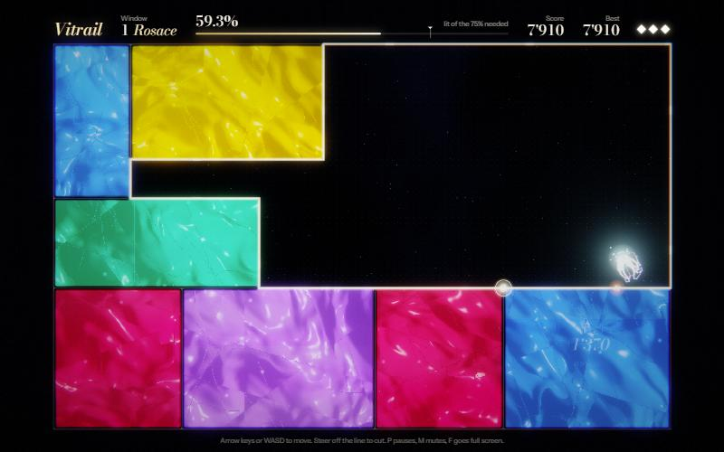
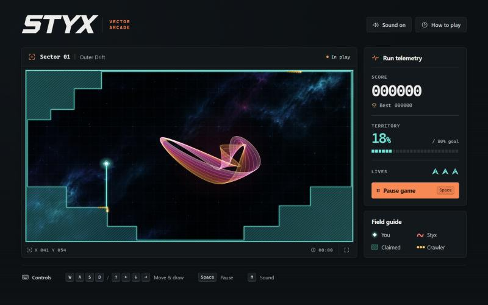
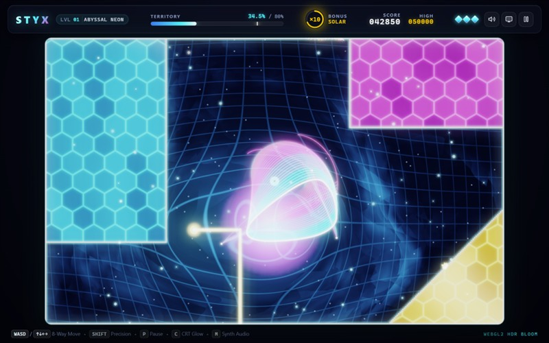

Styx
Three territory-capture arcade games inspired by the 1983 DOS game Styx and by Qix. Leave the safe border, cut a line across the open field and close it before the roaming enemy touches it: the area you seal off is yours. Claim most of the field to move on. Every game keeps high scores on the device and on a list shared between players. Each version below was built by a different AI assistant from the same brief.

Vitrail
Built with Claude. Cut the dark into panes of stained glass and light 75% to 80% of each window. Cinders hunt you along the lines, two Wisps drift in the dark from window 4, and your initials go on the shared high-score list.
Play VitrailVersion 1.2.0
Vector Arcade
Built with ChatGPT. Cut across a nebula, claim 80% of each sector while crawlers patrol the edge, and chase a place on the shared high-score board.
Play Vector ArcadeVersion 1.1.1
Neon Abyss
Built with Gemini. Carve in 8 directions across a warped nebula, time your closures to the ×1 / ×5 / ×10 multiplier, crystallize five procedural realms with WebGL2 bloom, and put your initials on the shared high-score list.
Play Neon AbyssVersion 1.1.1